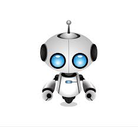

Artificial Intelligence is the process of using computer hardware and software to allow a computer to learn in real time. It does this by processing input data, such as past images and statistics dealing with heat patterns, and being able to find patterns and predict outcomes, such as what the effects of deforestation would be in relation to temperatures in South America. Essentially, you can think of a person who is extremely good at absorbing knowledge and being able to recognize patterns and potential outcomes. This can be useful in a variety of ways within many subsects such as education, research, recreation and commercial. For more detailed info on each of these use cases, see our industry page.
Ordinarily, artificially intelligent robots would cost millions to produce. However, without company’s innovation we have been able to bring different models to the masses. No longer is the cost of AI only within the grasp of large research universities. While the consumer versions of the robot may not be equipped to handle the same data as a large university research project, it can still be a very useful companion for things such as stock market analysis and savings analysis. By cutting down on the capability of the AI to the needs of an average consumer, we were able to cut the costs of it significantly.
We have all seen the doomsday movies where sentient robot overlords take over and enslave humans. We are here to put your minds at ease by letting you know that our products will not pose any potential threat to you or your loved ones. These science fictional scenarios all have one thing in common: they assume the AI is self-aware much like we are. However, an AI does not need to be self-aware to function, and by mitigating this we have eliminated a primary cause for safety concerns for our customers. We can proudly say that all our products follow Isaac Asimov’s three laws of robotics. What are those you might ask? Well these laws are as follows:
Our company takes full liability for any damages that occur do to a failure of our product as addressed in our license agreement.